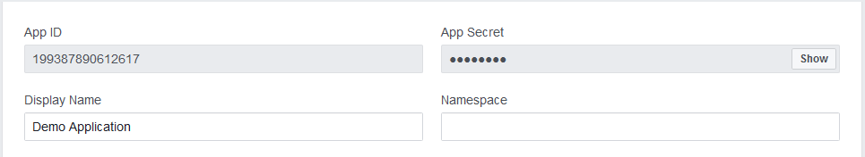

Facebook authentication
Facebook is one of the most popular social media sites in the world with a very large number of registered users. Your site's visitors may already have a Facebook account. With the Facebook Login authentication feature, you can allow visitors to use their Facebook accounts to register and log in to your site.
Prerequisite: To use Facebook authentication, you need to have HTTPS set up for your website.
Setting up a Facebook app
Start by creating a Facebook app:
Log in to your Facebook account at http://www.facebook.com/.
Go to https://developers.facebook.com/apps and click Add a New App.
Enter the Display Name of your new app and your Contact Email.
Click Create App ID.
Configure your Facebook App to receive authentication requests from your Kentico website:
Select your app and view the Settings -> Basic tab.
Type the domain that your website uses when connecting to Facebook into the App Domains field.
Specify the Privacy Policy URL.
Upload an image as the App Icon.
Click Add Platform and select Website.
Enter your Site URL.
Click Save Changes.
Facebook saves your app's settings.
Securing the Facebook integration
To ensure that the connection between Kentico and your Facebook app is secure, we strongly recommend that you download and apply hotfix 11.0.8 or newer. Then perform the following additional configuration for your Facebook app:
On your Facebook App's editing page, open the Settings -> Advanced tab.
Scroll down to the Security section and switch the Require App Secret option to Yes.
Click Save Changes.
Kentico automatically provides the required proof when communicating with your Facebook app.
Continue by setting up the Facebook login product for your app:
Click the plus icon (+) next to the Products menu.
Set up the Facebook Login product.
Open the Settings tab of the Facebook Login product.
Make sure the Web OAuth Login setting is enabled.
In the Valid OAuth redirect URIs field, enter the URLs of all pages from your website where you wish to allow Facebook authentication (i.e. pages that display the Facebook Connect logon web part).
The redirect URI values must be absolute, including the protocol, domain and virtual directory. For example: https://mydomain.com/Special-pages/SignIn
If your website is available on multiple domains, add all of the possible options.
Click Save Changes.
Next, you need to make your application publicly available (to allow usage by users outside of the Roles listed for you app):
Switch to the App Review tab.
Make sure your application is public.
Optionally, request additional permissions to retrieve user data from Facebook, and submit your app for review:
Click Start a Submission.
Click Add Items and select the following permissions for the submission.
Permissions for logging in through Facebook
user_birthday
user_location
See Permissions Reference - Facebook Login on the Facebook website for further details. The permissions represent data related to your users, which is stored on Facebook. You can configure Kentico to ask for this data when users log in via Facebook. See Loading user information from Facebook profiles.
For each permission item, click Add Details, fill in the required fields, and click Save.
Facebook requires adding of a screencast, which is a recording of your screen. To do so, follow the instructions provided by Facebook on how to create a screencast. A screencast is needed to show the Facebook reviewers how you are using the requested permissions.
While still on the App Review tab, click Submit for Review.
Facebook registers your application and displays its Dashboard. You can now configure Facebook authentication in the Kentico administration interface.
Configuring Facebook authentication in Kentico
Open the Settings application.
Expand the Security & Membership -> Authentication -> Facebook category.
Select your site.
This step is not required, but we do not recommend setting up Facebook authentication globally.
Select the Enable login with Facebook check box.
Copy your Facebook app's App ID and App Secret values into the corresponding settings in Kentico.
You can find the credentials at https://developers.facebook.com/apps, on your application's Settings -> Basic tab.

Facebook app credentials
Save the settings.
To add Facebook authentication functionality to your site, place the Facebook Connect logon web part onto a page.
Hotfix requirement
Due to changes in the Facebook JavaScript SDK, the initial version of the Facebook Connect logon web part no longer works. To use Facebook authentication, you need to download and apply hotfix 11.0.44 or newer.
Edit the page in the Pages application.
Select the Design tab.
Add the Facebook Connect logon web part to a zone.
The web part displays the Login button to users who are not yet logged in. Clicking the button opens the Facebook Login dialog. The dialog asks you to enter your Facebook credentials and then requests permission to access your personal data. The required permissions depend on the settings in Security & Membership -> Authentication -> Facebook. For more details about accessing personal information on Facebook, see Loading user information from Facebook profiles.
You may encounter one of these problems:
The web part renders an error message when in Design mode.
The web part does not display anything on the live site.
If you have these problems, double check your App ID and App Secret in the settings. See Connecting Kentico to social media.
When a user signs in through a third-party authentication service for the first time, Kentico automatically creates a new account for the user. Learn more about managing users that sign in through a third-party authentication service.
The system also automatically populates the user's details fields in the system with the details from the user's Facebook profile. What data the system loads depends on how you set up loading user information from Facebook profiles.
Reference – Facebook integration settings
The following are settings that you can use to adjust the behavior of integrated Facebook features. These settings are located in Settings -> Security & Membership -> Authentication -> Facebook.
Facebook app
Settings in this category determine which Facebook app to use for authenticating using Facebook. If you want to post to Facebook from Kentico, follow the procedure in Connecting Kentico to social media and Adding social media accounts.
We recommend selecting a site before adjusting the settings. Having a Facebook app connected to Kentico on a global level poses a security risk.
App ID – a numeric ID of your Facebook App. You can find your App ID on the Facebook App editing page.
App Secret – the key used to authenticate Kentico against the Facebook App. You can find your App secret on the Facebook App editing page.
Login with Facebook
Enable login with Facebook – enable if you want your website users to log in with their Facebook account.
Assign Facebook members to roles – when a new user logs in using Facebook, the system assigns the user to the roles entered here.
Update users – allows you to load information from the user's Facebook profile and store it with the user's record in Kentico. This feature only works when users log in using their Facebook accounts. See Loading user information from Facebook profiles.
Never – disables this feature. User information that has already been downloaded is kept in the system.
When they log in for the first time – downloads the user information only once, when they log in for the first time.
Every time they log in – updates the user information every time they log in. However, this option does not update fields in Kentico that the user has already changed or fields that the system already filled using the information from the Facebook profile. For example, if an existing user gets married and changes her name on Facebook, her record in Kentico is not updated because the system downloaded her name from Facebook before.
User profile mapping – determines how Kentico user fields match with Facebook profile fields.